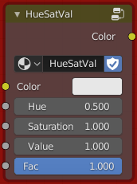
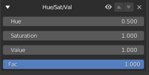
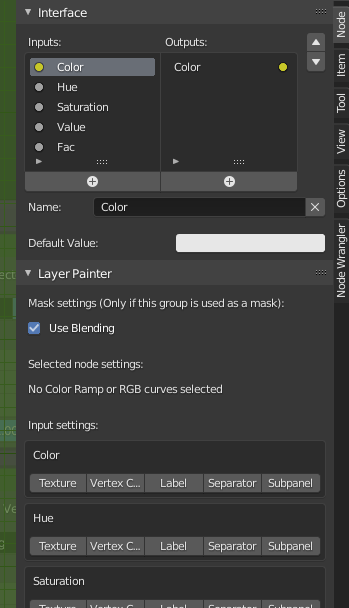
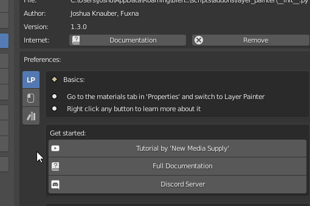
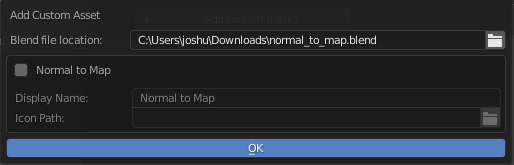

Creating a custom filter
A custom filter is basically just a node group. It's first input is the color of the channel it is effecting and the first output is the color that it gets changed to. All other inputs are then visible in the interface for the user to control the filter with.

In the example you can see the Color input and the Color output which represent the ones explained above. The Hue, Saturation, Value and the Fac are what is then visible in the interface:

You can create your own node groups this way and then load them into Layer Painter as explained below.
Input settings
There are a few settings for the inputs of your node group that should come in handy. They give you the ability to change the appearance of your node group in the interface.

You can find them when editing the node group. They are in the Node tab under the Layer Painter panel.
The 'Use Blending' settings is only important if you are creating a custom mask so we will disregard it now. Below you can see the 'No Color Ramp ... selected' info. If you have a color ramp or a rgb curves node in your group then you can select it and tick the option to 'Display it in the settings'. This will then show that nodes interface in the panel in addition to all other inputs.
Below, you can see a list of all inputs. Here you can choose if this input should be treated specially. You have the following options:
- Texture: If this is selected a texture selection will be added to this input and shown in the interface. When you activate the option you will get a few more choices. You can choose a baked texture to be used in this slot. This is only really applicable in masks though and we won't touch on it here.
- Vertex Color: This will add a vertex color selection to this input and show it in the interface.
- Label: This will not display the actual input value of the node, but only the name of it. It can be used to create labels inside the interface of your filter.
- Separator: This will not be displayed as an input value, but just as a separator between the other inputs.
- Subpanel: This option will start a subpanel at this input with its name. This means that all following input values will be shown inside the subpanel until another input is marked as a subpanel.
Add to Layer Painter
To add your filter to Layer Painter, go to the user preferences. Then navigate to the Custom Masks section.

Then click the 'Add custom filters' button. This will open a popup asking you for the filepath to the blend file where you have created your group. Select it and click OK.

This will open another dialog. Here you will see all groups in the file you selected. Check the checkbox on the ones you want to add as custom filters. This way you can also import multiple filters at once.
As a final step you can change the display name of your filter which is what is displayed in the dropdown. You can also optionally select an icon which will be displayed in the thumbnail selection.